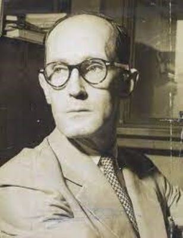

Machado de Assis
Nome completo: Joaquim Maria Machado de Assis
Data de nascimento: 21/06/1839, Rio de Janeiro, RJ
Data de falecimento: 29/09/1908 (69 anos), Rio de Janeiro, RJ
Escola literária: Realismo
Principais obras: Dom Casmurro(1899), Memórias póstumas de Brás Cubas(1881), Quincas Borba(1891), diversos contos
Carlos Drumond de Andrade
Nome completo: Carlos Drumond de Andrade
Data de nascimento: 31/10/1902, Itabira, MG
Data de falecimento: 17/08/1987 (84 anos), Rio de Janeiro, RJ
Escola literária: Segunda fase do modernismo
Principais obras: Alguma poesia (1930), Brejo das almas (1934), Sentimento do mundo(1940), A rosa do povo (1945), diversos poemas
Clarice Lispector
Nome completo: Chaya Pinkhasivna Lispector
Data de nascimento: 10/12/1920, Chechelnyk, Ucrânia
Data de falecimento: 9/12/1977 (56 anos), Rio de Janeiro, RJ
Escola literária: Pós-modernismo
Principais obras: A hora da estrela (1977), A paixão segundo G.H (1964), Felicidade clandestina (1971), Laços de família (1960), diversos contos
José de Alencar
Nome completo: José Martiniano de Alencar
Data de nascimento: 01/05/1829, Fortaleza, CE
Data de falecimento: 12/12/1877 (48 anos), Rio de Janeiro, RJ
Escola literária: Romantismo
Principais obras: Iracema (1865), Senhora (1875), O Gurani (1857), Lucíola (1862)
Lima Barreto

Nome completo: Afonso Henriques de Lima Barreto
Data de nascimento: 13/05/1881, Rio de Janeiro, RJ
Data de falecimento: 01/11/1922 (41 anos), Rio de Janeiro, RJ
Escola literária: Pré-modernismo
Principais obras: O triste fim de Policarpo QUaresma (1915), Clara dos anjos (1948), O homem que sabia Javanês (1911), diversos contos